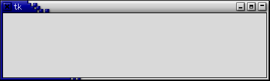
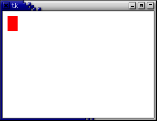
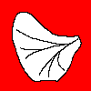

|
|||||||
| [ Home ] | [ Software ] | [ Curriculum ] | [ Hardware ] | [ Community ] | [ News ] | [ Publications ] | [ Search ] |
|
1. Python Graphics IntroductionThis page describes using Tkinter (a graphics interface) in Python.
1.1. Starting TkinterYou start Tkinter by importing it in python:
>>> import Tkinter
1.2. Create a WindowYou can create a basic window with:
>>> win = Tkinter.Tk() 
1.3. Add a CanvasA canvas is a place to draw. This adds a canvas to the window.
>>> can = Tkinter.Canvas(win, width=500, height=500, background='white') >>> can.pack() You must always "pack" an object before you can see it.
1.4. Putting things on the CanvasIn Tkinter, you don't actually "draw" on the canvas, but you put objects onto the canvas. That means that you can move the things once they are there, and each object has properties that it can take care of (such as handling mouse events, moving itself, etc).
>>> can.create_rectangle(10, 10, 30, 40, width = 0, tag = "label", fill = "red") >>> can.create_line(5, 10, 60, 90, fill = "blue") >>> can.create_text(10, 70, text='Hello World!', fill='black') >>> can.create_oval(10, 10, 70, 70) Each of those commands return an object ID (we just ignored the return value, though). X and Y start at 0,0 in the upper left-hand corner and increase on the canvas as you go right and down, respectively.  Each object can have an associated "tag" which can be used to get a handle on the graphic object, so that you can move or delete it:
>>> can.create_rectangle(10, 10, 30, 40, width = 0, tag = "label", fill = "red")
>>> id = can.create_line(5, 10, 60, 90, fill = "blue")
>>> can.delete( "label" ) # deletes all with same tag
>>> can.delete(id) # deletes by ID
>>> canvas.delete("all") # deletes everything
Programmatically, you can display the window, and allow mouse events by:
>>> win.mainloop()
1.5. Some miscellaneous thingsYou can put a title on the window with:
win.wm_title("Title of my Window")
Some simple code for adding a button that draws on a canvas. randomLine.py:
import Tkinter, random
def redraw():
r1 = random.random() * 200
r2 = random.random() * 200
r3 = random.random() * 200
r4 = random.random() * 200
canvas.create_line(r1, r2, r3, r4)
win = Tkinter.Tk()
canvas = Tkinter.Canvas(win, 100, 200) ## 100 x 200 width x height
canvas.pack()
button = Tkinter.Button(win, text = "Push me!", command = redraw)
button.pack()
Either add a call to win.mainloop() or call with python -i randomLine.py. A better design might involve packaging up the above code as a class, randomLineClass.py.
import Tkinter, random
class Lines:
def __init__(self):
self.win = Tkinter.Tk()
self.canvas = Tkinter.Canvas(self.win, 100, 200)
self.canvas.pack()
self.button = Tkinter.Button(self.win, text = "Push me!", command = self.redraw)
self.button.pack()
def redraw(self):
r1 = random.random() * 200
r2 = random.random() * 200
r3 = random.random() * 200
r4 = random.random() * 200
self.canvas.create_line(r1, r2, r3, r4, fill = "red", outline = "yellow")
lineObject = Lines()
But what if you want to be drawing, and be able to handle mouse clicks on buttons at the same time? That will require a little bit more complication...
2. An Extended ExampleThis example takes in an image, looks for Black, Red, and White regions, and makes a matrix with the values 0, .5, and 1 for those colors, respectively. Here is a sample image:  Here is the code.
# An extended example to get an image,
# convert to a matrix form, and change
# via clicking
# D.S. Blank
import Tkinter, sys
class Display(Tkinter.Toplevel):
def __init__(self, root, filename):
Tkinter.Toplevel.__init__(self, root)
self.image = Tkinter.PhotoImage(file=filename)
self.protocol('WM_DELETE_WINDOW',self.destroy)
self.frame = Tkinter.Frame(self)
self.canvas = Tkinter.Canvas(self.frame, width = 100, height = 100)
self.canvas.create_image(0, 0, image = self.image, anchor=Tkinter.NW,
tag="image")
self.canvas.bind("<Button-1>", self.click)
self.frame.pack()
self.canvas.pack()
self.makeMatrix()
def destroy(self):
sys.exit(1)
def makeMatrix(self):
# make a 2D matrix:
self.cell = [[0 for x in range(100)] for y in range(100)]
# fill it with pixel values:
for x in range(100):
for y in range(100):
r, g, b = map(int, self.image.get(x, y).split(" "))
if (r, g, b) == (255, 0, 0): # red:
self.cell[x][y] = .5
elif (r, g, b) == (255, 255, 255): # white
self.cell[x][y] = 1
elif (r, g, b) == (0, 0, 0): # black
self.cell[x][y] = 0
def click(self, event):
# Get the click location:
x, y = event.x, event.y
# get Red, Green, Blue:
r, g, b = map(int, self.image.get(x, y).split(" "))
print "Click at (%d, %d) = (%d, %d, %d)" % (x, y, r, g, b)
print "Cell[%d][%d] = %.1f" % (x, y, self.cell[x][y])
# white is 255, 255, 255
# red is 255, 0, 0
# black is 0, 0, 0
if __name__ == "__main__":
root = Tkinter.Tk()
root.withdraw()
display = Display(root, "butterfly.gif")
display.mainloop()
3. Pyro Modules Table of Contents
3.1. Modules
3.2. Additional ResourcesReference: PyroSiteNotes
|
| [ Home ] | [ Software ] | [ Curriculum ] | [ Hardware ] | [ Community ] | [ News ] | [ Publications ] | [ Search ] |
 View Wiki Source | Edit Wiki Source | Mail Webmaster
View Wiki Source | Edit Wiki Source | Mail Webmaster | |||||||